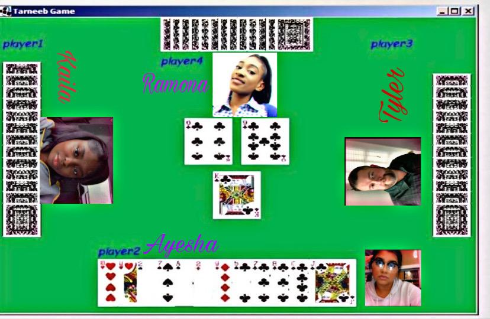

Tarneeb is a Middle Eastern card game.
Tarneeb takes on the trick-taking card game.
The name Tarneeb is Arabic for " trump " ,
which is a distinct characteristic of trick-taking card games.
Tarneeb is played by 4(players) Each pair of players are partners
and are facing each other.
A standard international 52-card pack is used,
the cards in each suit ranking from high to low: A-K-Q-J-10-9-8-7-6-5-4-3-2.
The first dealer is chosen at random.
Each player is dealt 13 cards each. After the first dealer make their deal
the next turn to deal passes to the right. The cards are shuffled and cut,
and are all dealt out, one at a time so that everyone has 13 cards.
Bids begin with the player to the right of the dealer and continues counter-clockwise.
Each player has 1 opportunity to bid and can choose to match or raise the highest bid.
If all four players pass on their first turn to speak, the hand is thrown in,
and the cards are shuffled and redealt by the same dealer.
Bids must be of 7 tricks or more to be valid.
The winning bidder can set the Tarneeb (trump) suit for the round.
Each bid can be Pass or Bid and the bid consists of number of tricks and the trump suit or no-trump.
The individual tricks are split across multiple rounds.
The dealer begins the first trick by playing a card, therefore leading the trick.
Other players then attempt to win the trick by playing cards, with some players
requiring to follow suit. A player can win by playing a card of a higher value,
with the same suit. If a player does not have a card from the same suit,
they must still play a card of their choosing, but forfeit the round.
The trump suits are determined either by a draw from the remaining cards,
or through bidding. The trump suit becomes a winning suit during the game,
and adds a layer of strategy to the game, since these mitigate the advantage of the players leading the trick.
The winner of one trick will lead the next trick. This process continues until all hands are emptied.
Each bid can be Pass or Bid and the bid consists of number of tricks and the trump suit or no-trump.
The number of tricks is defined by number 1,2,3... where 1 means 7 tricks and generally (number + 6)
In order to be winner a winner at Tarneeb you have to be good at bidding and score.
The game is played by 4 players there are options to have computer players- players are set up in a coordinal point fashion – north, south, east and west. Cards are shuffled and distributed evenly amongst players each player gets 13 cards.
The player who won the bidding leads to the first trick, and thereafter the winner of each trick leads to the next. Play is counter-clockwise. Players must follow suit if able to. Those unable to follow suit may play any card - either trump (tarneeb) or discard a card of another suit (sakret). Each trick is won by the highest trump in it, or by the highest card of the suit led if it contains no trumps.